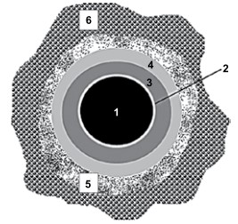

1. Um eminente médico e professor de medicina legal de renomada universidade recebeu uma consulta sobre determinado assunto de sua especialidade. Portanto, ao responder por escrito, objetivando esclarecer dúvidas existentes em um relatório médico legal, ele emitirá um documento denominado:
2. Em um exame necroscópico, o médico legista observou na região posterior da perna direita uma lesão arroxeada, com presença de infiltração hemática nas malhas do tecido decorrente de ruptura de vaso sanguíneo. Dessa análise, é correto afirmar que se trata de
3. Como resultado do processo natural da putrefação do corpo após a morte, em determinada fase, ocorre uma dissolução dos tecidos, por ação conjunta de microrganismos e fauna cadavérica, a qual é composta de larvas e insetos. Esse fenômeno ocorre na fase:
4. No exame antropológico forense de uma ossada humana completa, correspondente a um indivíduo adulto, com finalidade de definir altura e sexo, os ossos mais indicados para essa análise são, respectivamente:
5. No incêndio e desabamento de um prédio, algumas vítimas tiveram seus corpos fragmentados e carbonizados. Considerando-se os recursos utilizados pela odontologia legal para a identificação de indivíduos, é correto afirmar:
6. Homem de 25 anos de idade, internado na UTI (Unidade de Terapia Intensiva), em coma há 5 meses por trauma craniencefálico secundário a atropelamento, morre por tromboembolia pulmonar decorrente da estase sanguínea pela imobilidade prolongada.
A natureza da morte e a instituição que deverá emitir a declaração de óbito são, respectivamente:
7. A classificação da impressão digital representada a seguir é do tipo
8. É considerada um fenômeno cadavérico transformativo destrutivo a
9. Observe o esquema seguinte, que representa o orifício de entrada de um projétil de arma de fogo, disparado de uma distância de cerca de 50,0 cm do alvo (região dorsal do tronco humano).
A região assinalada pelo número 3 (três) corresponde, neste contexto, à
10. A expulsão de um concepto do útero materno, com menos de 20 semanas de gestação, devido à presença de um leiomioma uterino, é considerada um aborto